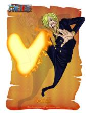

“黑足”山治（
年龄：19岁→21岁
生日：3月2日
血型：S型RH阴性
身份：海上餐厅巴拉蒂副料理长→草帽一伙厨师
故乡：北海
身高：177cm→180cm
喜欢的食物：辣味海鲜面，适合红茶的食物
爱好：下厨，抽烟，浪漫幻想
身世：文斯莫克一族三子
梦想：寻找传说中的奇迹之海－ALL BLUE（曾在恐怖三桅船上透露自己梦想过成为透明人并且为别人带来帮助，
其实是为了偷窥女澡堂，但是吃了透明果实的阿布萨罗姆使他放弃了这个梦想。）
悬赏：7700万（司法岛事件）→1亿7700万（德雷斯罗萨篇）→3亿3000万（蛋糕岛事件）
金发，有着卷曲眉毛，永远遮住半边脸的家伙，香烟不离口，最爱女人，
很花心但很有风度，海贼中的绅士。小时候跟随大海贼红脚哲普学习厨艺。
踢技以快准狠被海军称之为“黑足”。遵守“骑士道精神”，从不愿意伤害任何的女性，
哪怕是敌人。梦想是找到传说之海All Blue而跟随路飞一同进入了伟大航路。
